Handling
Instruments
Hands
Rest on a firm base, eg when holding a scalpel:
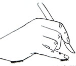
Steady instruments by resting on the other hand:
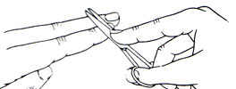
Scalpel
Best control of pressure by drawing belly across cut.
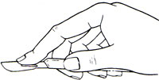
Cut from non-dominant to dominant side in general.
Protect deeper structures by interposing another instrument if cutting
deep.
Scissors
Hold as follows:
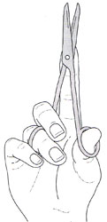
If left handed, the instrument is designed against you.
- insert whole terminal phalanx of left thumb through ring, drawing it
to left, increasing binding force between blades.
Can cut in opposite-to-usual direction by reversing scissors:
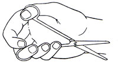
Dissecting
Forceps
Hold as a pen, usually in the non-dominant hand to free it.
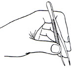
Toothed forceps slightly puncture tissue, tethering it and holding it.
- avoids crushing, which non-toothed forceps do.
- skin is tolerant of punctures, but severely injured by crushing.
- fascia, fibrocartilage, bone best grasped with toothed-forceps as
slippery.
Learn to palm forceps to free dominant fingers and thumb.
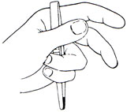
Artery
Forceps / Haemostats
Invented by Pare, ratcheted by Sir Thomas Spencer Wells.
- separate ratched in plane at right angles to hinge action.
- use a single click.
Shafts should be sufficiently long to be lie outside wound.
Hold like so:
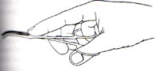
-tips pointing down for fine bleeding points.
- concavity up for more substantial vessels.
Grasp smaller vessels near the forcep tip (point still protruding).
- grasp larger vessels nearer the hinge to avoid straining the forceps.
When assisting, remove with the left hand, holding scissors in right.
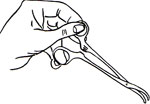
Tissue
Forceps
Good traction on slippery tissue / when traction needs to be varied.
Several lightweight ones may do better than one heavy forcep.
Needle
Holders
Mayo's are typically used.
Start with hand fully pronated, progressively supinating for natural
action.
- sew towards your left foot.
Convenient to be able to palm a needle holder when tying stitches /
doing short actions.
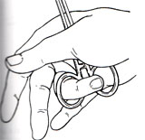
Or
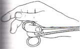
To avoid removing and replacing a needle, turn it 180o in the holder
and regrip.
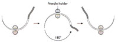
Retractors
Use as little retraction as necessary to avoid damage.
- a hand over a pack is less damaging than a metal retractor.
Clamps
Some surgeons like, some dislike bowel clamps.
- if you use them, use them lightly.
- if using crushing clamps, excise the crushed zone.
Mechanical
Devices
Do not become dependent on them: traditional methods are more versatile.
Clips
Cleverly designed so that tips meet first, so that tube does not slip
away
- then close lumen with further compression.
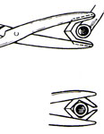
Staplers
Devices work like regular staplers with an anvil shaping the ends into
a B that does not crush tissue.
Skin staplers work differently: no anvil: outer pillars descend instead.
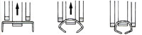